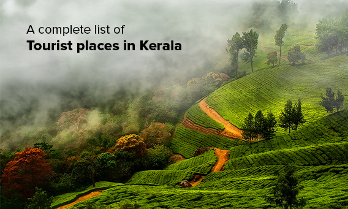

Kerala, one of the most beautiful states in India situated in the southwest corner of the country is blessed with the greenery of nature. Kerala is one of the most popular tourist destinations. Kerala has 14 districts with Thiruvananthapuram (Trivandrum) as the capital. The Port city Kochi and Kozhikode are the other two major cities in Kerala. There are three airports providing international as well as domestic connections.
The state is spread in an area of 38,863 square kilometer with a population of 31.8 million. Languages spoken are Malayalam, Hindi and English. In literacy, Kerala stands first among the Indian states with a literacy rate of 90.9%. Kerala is a secular place. Religion in Kerala is a mixture of different faiths; Hinduism, Islam and Christianity being the most significant among them.
The climate in Kerala is tropical. The summer (February - May) and Monsoon (June - August) are the seasons specifically experienced here. The best time to visit Kerala is between August and March. Important food crops in Kerala are Rice and Tapioca. Kerala is a major producer of coconut, rubber, pepper, cardamom, cashew, coffee, tea, ginger and cocoa. Spices like cinnamon and cloves are cultivated in Kerala.
Coir products, marine products, handloom and khadi are the major industries in Kerala. Tourism is the fast growing industry in Kerala. So many people are working in tourism industry. The uniqueness of this place draws thousands of tourists every year to this magical land.
Kerala has many wonderful art forms and festivals. Kathakali, a classical dance form of Kerala attracts so many tourists. Kalaripayattu the martial art form of Kerala is also well known inside and outside the country. Kerala is the land of several colourful festivals. Be it the state festival Onam or the temple festival Pooram people in Kerala celebrate all the festivals with great passion and spirit.
Kerala is the land of Ayurveda which is a unique and indispensable branch of medicine. Ayurveda not only refreshes your body but also refreshes your soul. The period between April to August is said to be the best time to get Ayurveda treatment. Kerala never disappoints you. There are so many varieties of attractions like beaches, backwaters, waterfalls and wildlife. Kerala is the one place where you can experience the simplicity of village life and wildlife in close quarters.
Adorned by the magical charm of the Vembanad Lake, Kumarakom is another beguiling backwater destination in God’s Own Country. Located within the proximity to Kottayam city, this is the place where even being lazy is also one of the best things you can do during your Kerala holidays.
More Details
If you are looking for an offbeat, yet captivating holiday experience in Kerala, you must plan your vacation in Vagamon. One of the most scenic hill stations and least explored tourist places in Kerala, this retreat in the Idukki district is known for its salubrious beauty, pleasant climate, and much more.
More Details
India’s ‘Spice Capital’ is all about lush greeneries and heart-warming ambience, hence the name “God’s Own Country’! And while in Malampuzha, located in the Palakkad district, you can feel the true essence of Kerala and its bountiful nature.
More Details